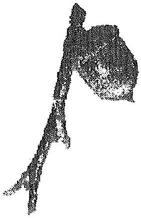

I picked up Hillman's book The Soul's Code, In Search of Character and Calling expecting to find a simple methodology which would help me identify my next life stage. Though I was not handed an easy "1-2-3 guide to your new career," Hillman's opus turned many of my favorite psychological processes upside down, delighting me intellectually, teasing me spiritually, and challenging my soul to trust the process as it unfolds in my life. His book is not only a provocative read, it is a revisioning of human psychology.
Hillman advocates an approach to "character" which transcends the Freudian concept of sexual sublimation as motivation for one's character traits, the Jungian notion of alignment with a greater, collective, transcendent, eternal Self, and the most recent Inner Child approach to psychology which pins the foundations of our existing character on the tribulations of our early parenting. Hillman builds on these earlier ideologies. He weaves a larger cloth, using threads from the past but not limited by their mind sets. In this respect his is truly a Great Work. His theory is an evolution of psychology more than it is a revolution (a term the author might find more gratifying).

His central theory is that of the "acorn," his metaphor for calling, the "daimon" of the Greeks. Ideally, he says, the acorn falls from the sky and doesn't just "grow up," it "grows down" into the ground, our earthly life.
Using Hillman's biographical process I reviewed my life. Have I ever been clear about my calling? He suggests that the evidence of "acorn" is present and visible at all ages. When I was eight, I remember telling my teachers, that I would like to grow up and become a nun or a priest, but with four children. These Roman Catholic Nuns were quick to advise me that my secular and religious ambitions were not compatible and women would never be priests. I should pray for the courage to choose a religious vocation over the more ordinary secular path. Now, in my mid forties, I live with my four children, am pursuing my degree in Religious Studies, am dedicated to my ongoing spiritual journey, and live an aesthetic if not ascetic monastic lifestyle.
Hillman's theory is that the acorn of my soul knew at some great and deep level that at mid life, I would find myself dedicated to my four kids and my spiritual path, both. As I told the kids last week, I have chosen to live a life of simplicity (the vow of poverty), I have chosen to live obedient to the voice of God within (a process which undergoes many changes as I evolve), and for now anyway, I live a chaste life (which I said was just bad luck!). We all laughed. So it could be argued that I live a modified monastic lifestyle. The eight year old wasn't far wrong!
Hillman suggests that my acorn has used every circumstance, in effect "choosing" the many trials of my youth and young adult life to enhance, highlight and hone a character which is perfectly suited to the task of my own particular calling. For instance, when my marriage was complete the acorn led me to move on, seemingly mindful of its need to have peace, solitude and much free time as a nurturing environment for creative work. If my daimon needs freedom ... by God, he'll create it! The gods will be served! This is not so much because of the pains of my youth, according to Soul's Code, but in aid of the task, the opus.
That is not to condone the betrayal, the abuse, or the slings and arrows of our outrageous fortunes. The acorn of my soul saw me through my trials, like a guardian angel, like the higher self, like the hand of God, guiding, protecting, directing, providing me with the desire to grow from it all. To heal is not only to acknowledge the pain of the past, but also to recognize the gift we have grown as survivors, often an equal and opposite gift to the pain and betrayal. Hillman takes strides forward into personal accountability, away from the narcissistic victimology of popular self help groups. He emphasizes over and over again, not to focus on the why of the past, nor to focus on the what of the future. Instead, he asks us to use every aspect of daily life to carve, to nurture, to define, to discriminate what the innate impulses, fantasies, thoughts, loves, even accidents of our lives are seeking to express. Imagine the acorn as a magnet and the facts of our biography as metal shavings, and you'll get the picture of the intentionality and power of the acorn, the daimon that "drives" us into our fate.
Once the acorn is identified, in ourselves, in our children, in our clients, Hillman advocates a "growing down" rather than a "growing up." The acorn comes from the realm of the gods, way above our heads, from the crown of the mighty oak. Its purpose and potentiality, its very nature is transcendent. In itself, the acorn is but a Saturday afternoon snack for a squirrel. But if this acorn lands, develops a relationship with the soil of everyday life, grows down and sets roots, it will grow to feed a whole community of squirrels. In psychological terms, this is similar to the process of becoming conscious (landing), individuating (growing roots and a full crown) and self-actualizing (harvesting).
Like Thomas Moore in "Care of the Soul," Hillman has taken the approach I first encountered through feminist and creation spirituality's of marrying the transcendent with the immanent: living in light yet befriending the earth, the dark, the moist and fertile, the humble and the ordinary. Where ordinary life and extraordinary "acorn-ness" meet, HERE is genius manifest, HERE is wholeness, HERE is "heaven on earth." This is the "coniunctio" the inner marriage of God and Goddess, soul and spirit.
To accomplish this, Hillman advises us to find a place in our midst to exercise the gift of Self. We need to learn to accept the limitations of our earthly vessels (relationships, institutions, family of origin, etc). . He writes:
In his last chapter on methodology, he talks at length about the similarity of the acorn with the glans of the penis. His theory too, seems primarily masculine oriented. It has "sprung from the puer eternus" the archetype of eternal male youth. It knows the sky (the speculative, dreaminess of youth), and with effort and humility learns to know the earth (the pragmatic realities of life).
After more than ten years of study in feminist thought, I have developed an ability to translate masculine ideology into my own feminine dialect, instead of prejudging it as irrelevant to me as a woman. I am left feeling inspired with Hillman's way of revisiting biography. I have a renewed faith that all aspects of my life have been on purpose and a serenity borne of trust that the acorn does have its way in my life. I still don't know what I'm going to do with my life when the kids leave home, yet I've begun to investigate options that I might have previously judged as too "limiting." But right now it seems enough to spend time with my journal, feed my kids, write a few articles, read many books, counsel a few clients, seek to know God, embody the Goddess and wait for Godot, Kafka-style:
You don't need to leave your room, Remain sitting at your table and listen. Don't even listen, simply wait, Don't even wait. Be quite still and solitary. The world will freely offer itself to you. To be unmasked, it has no choice. It will roll in ecstasy at your feet.
Franz Kafka
Bibliography
Hillman, James The Soul's Code, in Search of Character and Calling, Random House, New York, NY, 1996.
Hollis, James, The Middle Passage, From Misery to Meaning in MidLife, Inner City Books, 1993.
Miller, Alice The Drama of the Gifted Child, Basic Books, 1981.
Pollard III, John D. Self Parenting, The Complete Guide to Your Inner Conversations, Generic Human Studies Publishing, Malibu, California, 1987.
Herman experiences a quantum pop in time as he suddenly finds himself turning in a test that hasn't even been passed out yet.